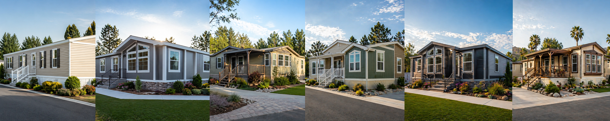

Professional Manufactured Home Appraisals

NorCal Valuations provides professional manufactured home appraisal services throughout the Bay Area and surrounding counties. With a focus on accuracy, compliance, and timely delivery, we support a wide range of needs including estate settlements, divorce proceedings, trust valuations, and lending requirements. Whether you’re working through a legal matter or making an informed financial decision, our reports are prepared to meet the standards your situation requires.